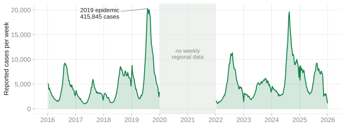
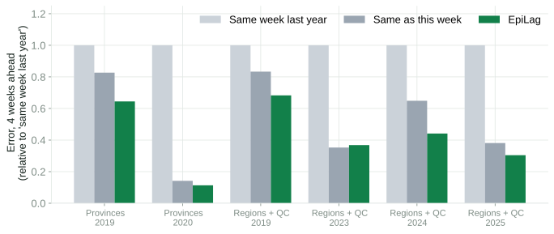
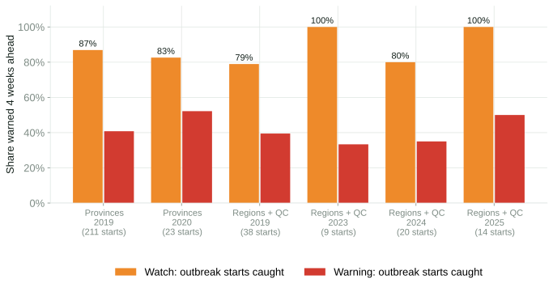
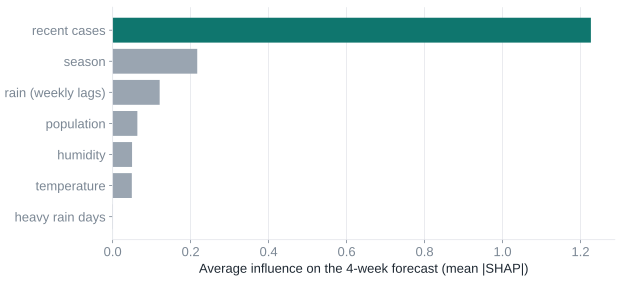
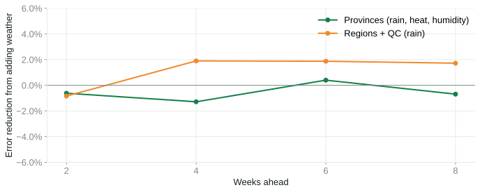

PJDSC 2026 · Trace the Pattern, Target the Cure
EpiLag-PH
Dengue early warning for Philippine LGUs: see the outbreak in the data weeks before the hospitals fill.
[Team name] · [Member 1] · [Member 2] · [Member 3] · [Member 4] · [Member 5]
The problem
Dengue keeps coming back, and we keep responding late.
441,902reported cases in 2019, the worst epidemic in recent years (DOH via HDX)
340,860reported cases in 2024 by 16 November (DOH)
~4.7×true symptomatic cases vs reported, in a Cebu City study (Undurraga et al., 2017)

Why we respond late
Surveillance sees dengue only after people are sick enough to be counted.
- Mosquitoes breed in standing water; people get sick weeks later.
- Cases are reported after they reach clinics and hospitals, then aggregated by week.
- Clean-up drives and fogging start when counts are already high, often near the peak.
- LGUs have limited money and staff, and no simple way to decide where to go first.
Question we asked: can open data tell a health office, 4–8 weeks ahead, which areas are heading for an outbreak, and where each peso helps most?
Our solution
EpiLag-PH: forecast, flag, and plan.
1 · FORECAST
Cases 2–8 weeks ahead
For every province, region and Quezon City, with a likely range, from recent cases, season, rain, heat and humidity.
2 · FLAG
Four alert levels
normal above usual watch outbreak warning
Each forecast is explained, in English and Filipino.
3 · PLAN
Where each peso helps most
Ranks clean-up drives and fogging by cases averted per peso, with low / central / high estimates.
Built for City and Provincial Epidemiology and Surveillance Units and health offices. It runs on data DOH already collects.
How it is used
A Monday morning at a provincial health office.
- Monday: the surveillance officer opens EpiLag-PH. Her province is on watch for 4 weeks from now; two neighbours are above usual.
- Why? The app shows the drivers: cases rising for 3 weeks, the rainy season starting.
- Plan: with a ₱5M budget, the app ranks clean-up drives in the areas with the most cases averted per peso.
- Act early: barangay health workers start clean-ups; clinics get test kits before the patients arrive.
Data
Built on the official catalogue, extended with open data.
| Source | What | Coverage |
|---|
| DOH Epidemiology Bureau via HDX (PJDSC catalogue) | Weekly dengue cases and deaths | 126 provinces and cities, Jan 2016 – Jan 2021 |
| UPRI-NOAH Dengue–Rainfall Dataset (Zenodo) | Weekly cases + rainfall | 17 regions 2016–2019, 2022–2025; Quezon City 2010–2025 |
| ERA5 reanalysis (Open-Meteo) | Daily rain, temperature, humidity | Every province, 2015–2021 |
| PSA-based population, PSGC codes (OCHA) | Rates and joins | 86 province-level units |
Licences: HDX public; ODC-ODbL (UPRI-NOAH); CC BY 4.0 (ERA5 via Open-Meteo); MIT (map boundaries).
Data quality
We checked the data before trusting it.
- Names fixed and coded: 126 locations mapped to 86 PSGC units. Typos such as NUEVA VISCAYA, SISQUIJOR and BASILIG (Bislig) were fixed.
- Cities folded into their provinces; NCR into its 4 districts; Maguindanao kept whole for 2016–2020.
- Deaths are unreliable for 2016–2017: 586 weeks show more deaths than cases. We do not use them.
- The HDX file ends in January 2021, not "present". Newer data came from UPRI-NOAH at region level.
- Missing reports stay missing, not zero.
Method
Simple, explainable models, tested honestly.
- Features: cases in recent weeks and the same week last year; rain for each of the past 12 weeks; heavy-rain days; humidity; temperature; season; population.
- Model: LightGBM quantile regression (10th, 50th, 90th percentile), one per horizon (2, 4, 6, 8 weeks).
- Calibrated ranges: conformalized quantile regression, so "80% likely" really covers about 80%.
- Thresholds: per area and week of year, from earlier years only: usual = mean; epidemic = mean + 2 SD.
- Explanations: SHAP values for every forecast.
How we tested
No peeking: every test year was forecast from earlier years only.
TRAIN
Years before Y
Models and thresholds use only data before the test year.
FORECAST
Every week of Y
2, 4, 6 and 8 weeks ahead, for every area.
COMPARE
Against simple rules
"Same week last year" and "same as this week". A model must beat both to be useful.
Test years: 2019 (epidemic) and 2020 (COVID-19 reporting dip) for provinces; 2019, 2023, 2024, 2025 for regions and Quezon City.
Result 1 · Accuracy
EpiLag-PH beats both simple rules 4 weeks ahead in 5 of 6 test sets.

Error = mean absolute error in weekly cases, relative to "same week last year". Exception: regions in quiet 2023, where "same as this week" was 4% better. Ranges covered 70–92% of outcomes (target 80%).
Result 2 · Early warning
The watch level caught 79–100% of outbreak starts 4 weeks ahead.

Outbreak start = first of 2+ weeks above the epidemic threshold. Trade-off: 42–63% of watch alerts were false alarms (provinces 2019: 46%; 87% in 2020, when COVID-19 cut reported cases). The stricter warning level caught fewer starts with fewer false alarms.
Replay · 2 June 2019
A month before the 2019 epidemic peak, the map was already lit up.
30 of 32provinces that crossed the epidemic threshold 4 weeks later were already flagged
11 of 11regions and Quezon City
Forecasts from models trained only on 2016–2018.
Replay · Quezon City, 2025
Quezon City's record outbreak started in January, an unusual time. EpiLag-PH saw it coming.
622cases in the week ending 23 Feb 2025, the city's highest in the data (2010–2025)
8 Dec 2024the 4-week-ahead forecast issued that week put the week of 5 Jan 2025 on watch
18 of 18weeks above the epidemic threshold in 2025 were flagged 4 weeks ahead
Honest trade-off: the watch level was on for 31 of 52 weeks in 2025. In calmer 2024 it was on for 13 weeks and caught all 10 weeks above the threshold.
Trace the pattern
What drives the forecast, and an honest look at weather.

Recent cases and season carry most of the signal.

Removing all weather features changes error by −12% to +11%; about 0% on average for provinces, +2% for regions.
We tested our own assumption. At province and region scale, weather adds little beyond case trends. That is a finding, not a failure: the early warning works from data every LGU already has.
The app
One screen tells a health office where to look this week.
- Map and ranked list of alert levels
- Forecast with range, threshold and history
- Why: the drivers of each forecast
- Alert text in English and Filipino
- Replay any past week
Target the cure
Where does each peso prevent the most cases?
- Expected cases averted = forecast × share covered × effect.
- Funds the best cases-averted-per-peso first, up to each action's reach.
- Effects are cautious ranges: community clean-up with container covers, OR 0.22 in a meta-analysis (Bowman et al., 2016); fogging, little evidence.
- Costs are editable: each LGU enters its own.
Local focus · Quezon City
From a city forecast to a barangay shortlist.
- Weekly forecast for the whole city (data 2010–2025).
- Shared out by each barangay's share of cases in 2022–2025.
- Gives BHW teams a ranked list of where to start clean-ups.
Barangay data is yearly, so this is a ranking, not a weekly barangay forecast.
Impact
Weeks of lead time, with data the system already has.
4–8 wkslead time for watch alerts on most outbreak starts in the tests
₱0data cost: open data only; runs on a laptop or free hosting
Any LGUneeds only weekly case counts and free weather data
- Earlier action: clean-ups and test kits before the peak, not after.
- Smarter spending: money goes where it averts the most cases.
- Fits UHC and devolved health: CESUs and provincial health boards can use it now.
Limits and next steps
What EpiLag-PH cannot do yet.
Limits
- Province data ends Jan 2021; the province view is a replay.
- Watch alerts have many false alarms.
- Reported cases undercount infections.
- One weather point per area.
- Budget effects and costs are assumptions.
Next steps
- Connect to current weekly PIDSR data through DOH or an LGU partner.
- Barangay-level weekly data with a city CESU.
- Pilot one rainy season; measure lead time and costs.
- SMS alerts in Filipino to BHWs.
Thank you
"Hospitals see dengue a month too late. EpiLag-PH sees it in the data, and tells LGUs where to act first."
Code, data pipeline, results and app: github.com/Romeo-04/epilag · App: romeo-04.github.io/epilag/web
- Bowman, L. R., Donegan, S., & McCall, P. J. (2016). Is dengue vector control deficient in effectiveness or evidence? PLOS Neglected Tropical Diseases, 10(3), e0004551.
- Undurraga, E. A., et al. (2017). Disease burden of dengue in the Philippines: Adjusting for underreporting. Am. J. Trop. Med. Hyg., 96(4), 887–898.
- Olana, K. O. A., et al. (2025). Spatial distribution analysis and comparative forecasting of dengue resurgence in the Philippines (2025–2027). Transboundary and Emerging Diseases, 7480710.
- Romano, Y., Patterson, E., & Candès, E. (2019). Conformalized quantile regression. NeurIPS 32.
- Pelitro, K. J., et al. (2026). Weekly dengue incidence linked to satellite rainfall (v1.0.0). Zenodo 19448695. · DOH Epidemiology Bureau dengue data via HDX. · ERA5 via Open-Meteo. · OCHA COD-AB/COD-PS.